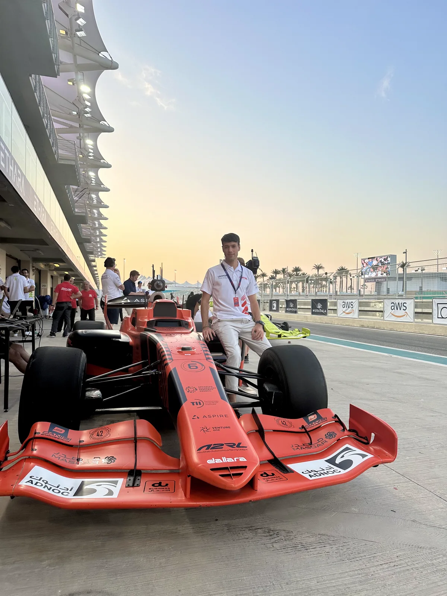

I develop planning and control algorithms for autonomous vehicles, combining research in
predictive control and game theory with experience in production software and full-scale
autonomous racing.
Currently at Hipert. Previously at UNIMORE Racing.
Indianapolis Motor Speedway · Indy Autonomous Challenge

Yas Marina Circuit · Abu Dhabi Autonomous Racing League
A2RL 2024, Yas Marina · UNIMORE Racing best lap
IAC 2024, Indianapolis Motor Speedway · Race highlights
1 / 4
Slide 1 of 4: Indianapolis Motor Speedway · Indy Autonomous Challenge
Systems engineering · Subsystem leadership
Full-scale autonomous racing
Led motion planning and control for a full-scale autonomous race car, from subsystem
architecture and real-time implementation to integration and track validation.
The 2024 season included podiums at A2RL and the Indy Autonomous Challenge.
Deliver reliable control and overtaking behavior under tight computational
budgets, tire-limit dynamics, and interactions with competing vehicles.
My contribution
Led the planning and control subsystem architecture and implementation; designed
planners, controllers and safety fallbacks; coordinated integration with
localization and perception; analyzed telemetry and validated the stack on
track.
Outcome
As Motion Planning & Control Lead, I guided the subsystem through two 2024
podiums: third at A2RL, with the fastest lap, sectors, and race speed; and
second at the Indy Autonomous Challenge after a 30-lap, 19-overtake final at
speeds up to 290 km/h.
Developed RA-GTP, a game-theoretic planner that translates racing regulations into
mathematical constraints and reasons about how right-of-way and yielding
responsibilities shape an opponent’s behavior.
RA-GTP was published at IEEE ITSC 2025. The real-time implementation of RA-GTP,
validated on scaled vehicles, is published in IEEE TCST.
Game theory · Mixed-integer optimization · Real-time SQP
Conventional predictive planners model collision avoidance, but not asymmetric
right-of-way and yielding responsibilities.
RA-GTP · ITSC 2025
Encoded regulations with mixed logical dynamical constraints, formulated
multi-agent interaction as a generalized Nash equilibrium problem, and solved it
using iterated best response.
Real-time RA-GTP · IEEE TCST
Developed a tailored real-time iteration scheme within a mixed-integer SQP
solver and a single-pass iterated best-response method for real-time
game-theoretic planning.
Validation
The ITSC 2025 work was evaluated in simulation. The TCST work was experimentally
validated on 1:10-scale Berkeley Autonomous Race Car (BARC) vehicles in
head-to-head racing.
ADAS · Vehicle motion control
ADAS & predictive motion control
Developed decoupled longitudinal and lateral MPC controllers that exploit path
preview to combine accurate tracking with driving comfort.
The urban-driving demonstration builds on the control approach developed during my
master’s thesis internship at Maserati.
Decoupled longitudinal and lateral model predictive controllers handle vehicle
speed and path following.
Path preview and comfort
The controllers use information about the path ahead to anticipate upcoming
geometry while accounting for driving comfort.
Background
The demonstration follows the implementation described in my master’s thesis,
Rapid Control Prototyping of an L2+ Highway Assist System
, completed during an internship in Maserati’s Virtual Engineering team.
I work at the intersection of optimal control, vehicle dynamics, and interaction-aware
planning. My focus is on carrying a mathematical formulation through implementation,
integration, and validation.
I earned a Ph.D. in Automotive Engineering for Intelligent Mobility in 2026, including
research at UC Berkeley’s Model Predictive Control Lab. Today I develop
production-grade planning and control software in C++.
Areas of focus
Model predictive control, numerical optimization, game-theoretic planning, and vehicle
dynamics.
Motion Planning & Control Engineer · Hipert
Production-grade planning and control algorithms for autonomous ground vehicles.
Ph.D. · UNIBO & UNIMORE
Predictive, regulation-aware, and game-theoretic planning for autonomous racing.
Visiting Researcher · UC Berkeley
Research at the Model Predictive Control Lab and experimental validation on BARC
vehicles.
Planning & Control Lead · Unimore Racing
Subsystem leadership, architecture, implementation, integration, and track
deployment.
Motion Planning & Control Engineer · Unimore Racing
Data analysis and system identification for planning and control development,
alongside a radar-based emergency pull-over controller for localization failures.
Master’s Thesis Intern — ADAS · Maserati
Designed and prototyped an L2+ highway-assistance system, including adaptive
cruise control, lane centering, and automated lane changes, from requirements
definition through real-time simulator testing.